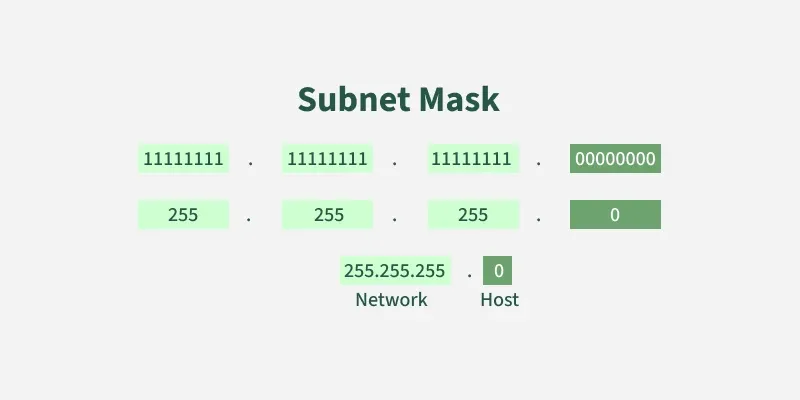

Subnetting
Summary
- Subnetting is dividing a large network into smaller sub-networks, called subnets
- Each subnets allowed devices to talk efficiently and improve network performance, security and management
What this is
- The process of splitting up one IP network into smaller IP networks
- Done via subnet mask/ CIDR prefix to decide which bits of an IP address represent the network and host
- Tackling scale + control, allow to organize IP address and reduce unnecessary local traffic & supporting segmentation
8 attributes of subnetting
- Network ID: First IP address in each sub-network
- Unique purpose - not allow to assign to users
- Allow routers to identify subnet along with CIDR/subnet mask
- Broadcast IP: Last IP address in each sub-network
- Unique purpose - not allow to assign to users
- Used to communicate with all IP addresses in sub-network
- First Host IP: First host IP address after Network ID
- Last Host IP: Last host IP address before Broadcast IP
- Host IP: The IP address assigned to the user
- Next Network: The network ID of the next Sub-Network
- No. IP addresses: Number of IP addresses in sub-network
- CIDR(Classless Inter-Domain Routing)/Subnet-mask: Alt ways to identify size of subnet
- Example: A subnet mask
/24means the first 24 bits (left to right) are part of the network ID, and the rest are the host ID255.255.255.0 = 11111111.11111111.11111111.00000000- Network ID: 192.168.1.0
- Broadcast IP: 192.168.1.255
- Host IP: 192.168.1.1 --> 192.168.1.254
- Example: A subnet mask of
/26would mean that255.255.255.192 = 11111111.11111111.11111111.11000000Network ID: 192.168.1.0 Broadcast IP: 192.168.1.63 Host IP: 192.168.1.1 → 192.168.1.62
- Example: A subnet mask
Subnet Mask vs CIDR
- A subnet mask is a 32-bit number used in IP addressing to seperate the network portion from host portion
- Allow devices to determine which part of an IP address refers to the network they're present & which part refer to specific location within that network

- CIDR Notation uses a simple format which make it easier to read
- The number after the slash (/n) represents num of bits used for the network portion of the IP address
How it works (high-level)
Conceptual explanation only. No commands, no configs. Use diagrams if needed.
Why it matters (security perspective)
- Enables a single IP network to be divided into smaller logical network --> More efficient IP address usage
- Improved security (segmentation) as subnets isolate departments, preventing unauthorized access
- Easier maintenance due to smaller segmented networks
-
Can prioritize traffic to different subnets
-
Can lead to more complexitiy and higher cost due to increase in routers, communication layers and careful planning
- Each subnet wastes 2 IP addresses, being network ID and broadcast IP
Common pitfalls / misunderstandings
- Subnetting only divides and segment the networks, it doesn't delete or remove the addresses
- Example: 192.168.1.0/26 still have all 256 addresses, but has been divided into 4 subnets
- To work out how many subnets, we have 2 bits to used for the subnet & 6 bits (64 values) for the host IPs
- The 2 bits are 128, 64 and there are 4 values:
00,01,10,11
Related concepts
References